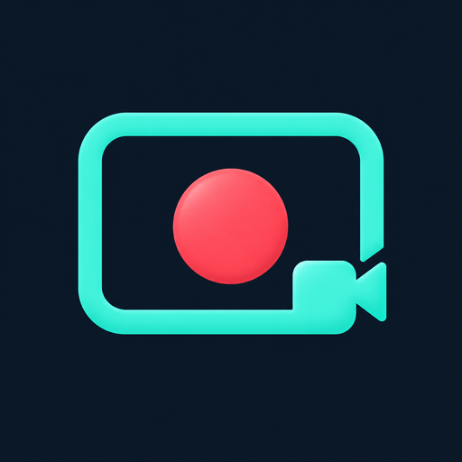

SCREEN RECORDER
기록하고 싶은 순간을,
간편하게 화면 녹화.
Android 화면을 녹화하고, 녹화한 영상을 바로 확인한 뒤 갤러리에 저장하세요.
원하는 화면에서 REC를 누르세요
- 앱에서 녹화 버튼을 누르고 화면 캡처를 승인합니다.
- 홈 화면으로 이동하면 다른 앱 위에 REC 버튼이 표시됩니다.
- 녹화할 화면을 열고 REC를 누르면 선택한 카운트다운 후 녹화가 시작됩니다.
- 정지 버튼을 누르면 앱으로 돌아와 녹화한 영상을 확인할 수 있습니다.
- 갤러리에 저장하거나, 삭제 확인 후 영상을 삭제하세요.
필요한 옵션을 간단하게
- 720p / 1080p 해상도 선택 — 화면의 짧은 변 기준
- 24 / 30 / 60 FPS 선택
- 무음 또는 마이크 녹음
- 카운트다운 없음 / 3초 / 5초 선택
- 녹화 시간 표시, 일시정지 및 계속 녹화
- 영상 아래 재생 버튼과 진행 바로 미리보기 조작
- MP4로 갤러리의 Movies/AtticSoft에 저장
Android 10 이상에서 사용할 수 있습니다. 지원 해상도와 프레임은 기기에 따라 다르며, 보호된 콘텐츠는 녹화되지 않을 수 있습니다. 현재 기기 내부 소리 녹음은 지원하지 않습니다.
녹화 영상은 기기 안에
녹화 영상과 마이크 음성은 기기에서 처리하며 운영자 서버로 업로드하지 않습니다. 회원가입 없이 사용할 수 있습니다. 전면 광고는 일절 없으며, 앱 하단에 Google AdMob 배너 광고만 표시됩니다.
개인정보처리방침 보기지원 및 문의
브랜드: AtticSoft · 운영자: Daniel Jung
문제 발생 시 기기 모델, Android 버전과 오류 메시지를 알려주세요. 개인 영상이나 민감한 정보는 첨부하지 않아도 됩니다.